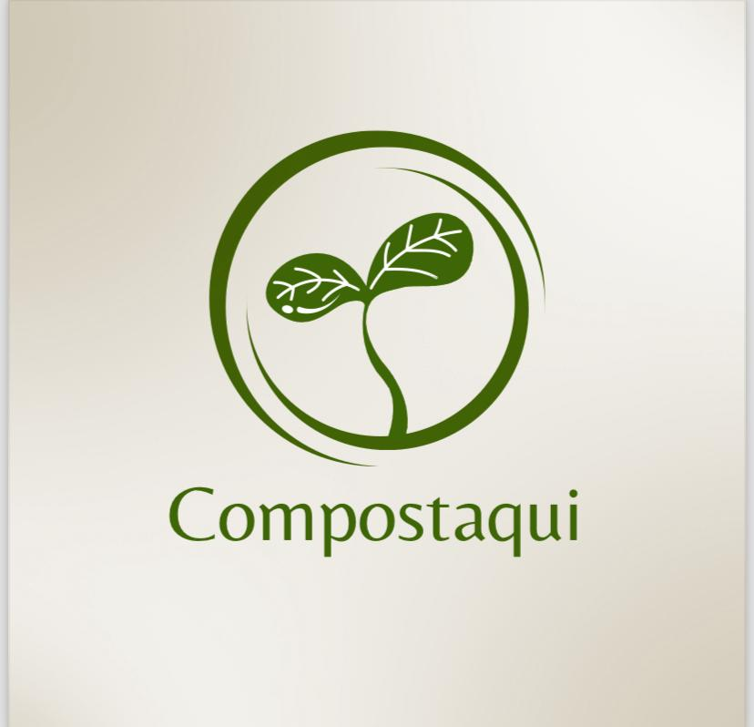

👥 Quem somos?

Somos um grupo de estudantes da Universidade Positivo que desenvolveu este aplicativo como parte de um projeto acadêmico.
Nosso objetivo é mapear biodigestores e conectar pontos de coleta com pessoas interessadas em reutilizar resíduos orgânicos de forma consciente e ecológica.
Acreditamos que, por meio de soluções simples e acessíveis, podemos incentivar a reutilização de materiais orgânicos, reduzir o desperdício e promover práticas mais sustentáveis no dia a dia.
Este app é um passo que damos juntos rumo a um futuro mais limpo e equilibrado.🌱
Um biodigestor é um sistema simples que transforma lixo orgânico em gás e adubo. Veja como ele funciona passo a passo:
♻️ 1. Entrada dos resíduos
Você coloca dentro do biodigestor restos de comida, esterco, folhas e outros materiais orgânicos.
Dentro do tanque, sem presença de oxigênio, bactérias decompõem esse material. Esse processo é chamado de digestão anaeróbica.
Durante a digestão, as bactérias produzem um gás chamado biogás (principalmente metano), que pode ser usado para:
Cozinhar
Aquecer a água
Gerar energia elétrica
O que sobra depois do processo é um líquido rico em nutrientes, que pode ser usado como fertilizante natural em plantações ou hortas.
Reduz o lixo orgânico
Gera energia limpa
Produz adubo natural
Ajuda o meio ambiente
Nossa missão
Mapear, catalogar e facilitar o acesso a informações sobre pontos de coleta para biodigestores, promovendo a reutilização sustentável do lixo orgânico e contribuindo para a conscientização ambiental.
Siga-nos também no instagram
📸Ir para o Instagram